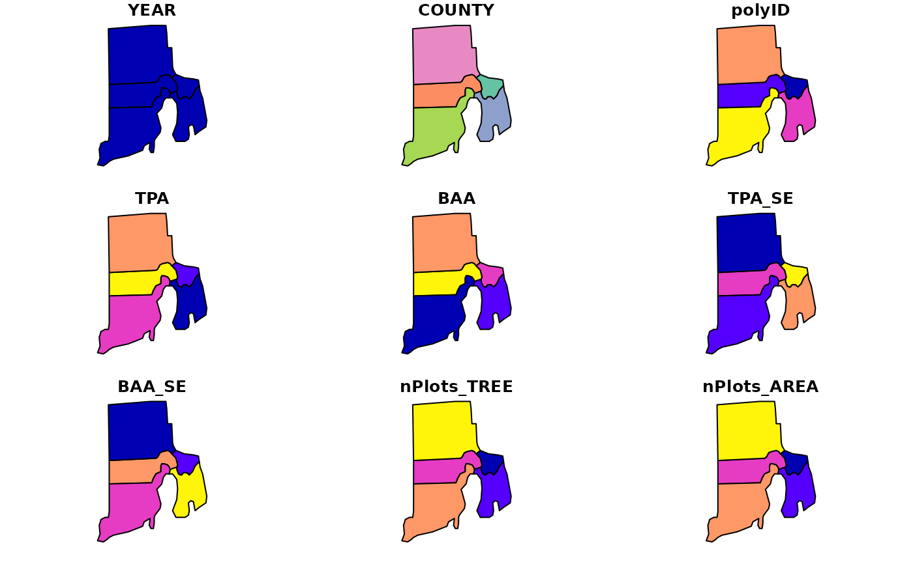
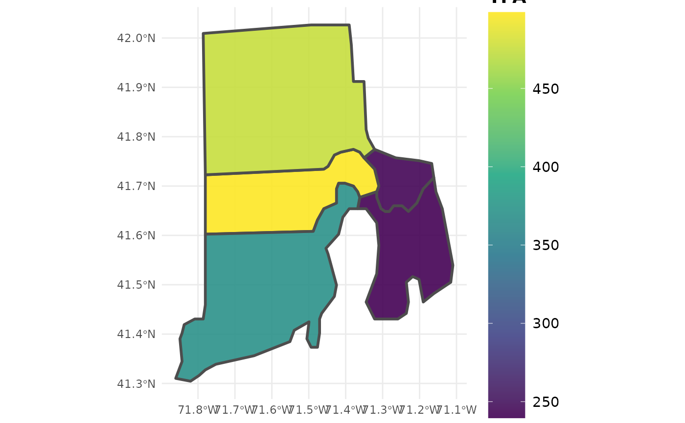

Estimate trees per acre and basal area per acre from FIADB
tpa.RdProduces tree per acre (TPA) and basal area per acre (BAA) estimates from FIA data, along with population totals for each variable. Estimates can be produced for regions defined within the FIA Database (e.g. counties), at the plot level, or within user-defined areal units. Options to group estimates by species, size class, and other variables defined in the FIADB. If multiple reporting years (EVALIDs) are included in the data, estimates will be output as a time series. If multiple states are represented by the data, estimates will be output for the full region (all area combined), unless specified otherwise (e.g. grpBy = STATECD).
Usage
tpa(db, grpBy = NULL, polys = NULL, returnSpatial = FALSE, bySpecies = FALSE,
bySizeClass = FALSE, landType = 'forest', treeType = 'live',
method = 'TI', lambda = .5, treeDomain = NULL, areaDomain = NULL,
totals = FALSE, byPlot = FALSE, treeList = FALSE,
nCores = 1)Arguments
- db
FIA.DatabaseorRemote.FIA.Databaseobject produced fromreadFIAorgetFIA. If aRemote.FIA.Database, data will be read in and processed state-by-state to conserve RAM (see details for an example).- grpBy
variables from PLOT, PLOTGEOM, COND, or TREE tables to group estimates by (NOT quoted). Multiple grouping variables should be combined with
c(), and grouping will occur heirarchically. For example, to produce seperate estimates for each ownership group within methods of stand regeneration, specifyc(STDORGCD, OWNGRPCD).- polys
sporsfPolygon/MultiPolgyon object; Areal units to bin data for estimation. Seperate estimates will be produced for region encompassed by each areal unit. FIA plot locations will be reprojected to match projection ofpolysobject.- returnSpatial
logical; if TRUE, merge population estimates with
polysand return assfmultipolygon object. WhenbyPlot = TRUE, return plot-level estimates assfspatial points.- bySpecies
logical; if TRUE, returns estimates grouped by species.
- bySizeClass
logical; if TRUE, returns estimates grouped by size class (2-inch intervals, see
makeClassesto compute different size class intervals).- landType
character ("forest" or "timber"); Type of land which estimates will be produced for. Timberland is a subset of forestland (default) which has high site potential and non-reserve status (see details).
- treeType
character ("all", "live", "dead", or "gs"); Type of tree which estimates will be produced for. All includes all stems, live and dead, greater than 1 in. DBH. Live/Dead includes all stems greater than 1 in. DBH which are live (default) or dead (leaning less than 45 degrees), respectively. GS (growing-stock) includes live stems greater than 5 in. DBH which contain at least one 8 ft merchantable log.
- method
character; design-based estimator to use. One of: "TI" (temporally indifferent, default), "annual" (annual), "SMA" (simple moving average), "LMA" (linear moving average), or "EMA" (exponential moving average). See Stanke et al 2020 for a complete description of these estimators.
- lambda
numeric (0,1); if
method = 'EMA', the decay parameter used to define weighting scheme for annual panels. Low values place higher weight on more recent panels, and vice versa. Specify a vector of values to compute estimates using mulitple wieghting schemes, and useplotFIAwithgrpset tolambdato produce moving average ribbon plots. See Stanke et al 2020 for examples.- treeDomain
logical predicates defined in terms of the variables in PLOT, TREE, and/or COND tables. Used to define the type of trees for which estimates will be produced (e.g. DBH greater than 20 inches:
DIA > 20, Dominant/Co-dominant crowns only:CCLCD %in% c(2,3)). Multiple conditions are combined with&(and) or|(or). Only trees where the condition evaluates to TRUE are used in producing estimates. Should NOT be quoted.- areaDomain
logical predicates defined in terms of the variables in PLOT and/or COND tables. Used to define the area for which estimates will be produced (e.g. within 1 mile of improved road:
RDDISTCD %in% c(1:6), Hard maple/basswood forest type:FORTYPCD == 805). Multiple conditions are combined with&(and) or|(or). Only plots within areas where the condition evaluates to TRUE are used in producing estimates. Should NOT be quoted.- totals
logical; if TRUE, return total population estimates (e.g. total area) along with ratio estimates (e.g. mean trees per acre).
- byPlot
logical; if TRUE, returns estimates for individual plot locations instead of population estimates.
- treeList
logical; if TRUE, returns tree-level summaries intended for subsequent use with
customPSE.- nCores
numeric; number of cores to use for parallel implementation. Check available cores using
detectCores. Default = 1, serial processing.
Details
Estimation Details
Estimation of forest variables follows the procedures documented in Bechtold and Patterson (2005) and Stanke et al 2020.
Specifically, TPA and BAA are computed using a sample-based ratio-of-means estimator of total trees (BA) / total land area within the domain of interest. Percentages of TPA and BAA in the domain of interest are represented as the total number of trees of a particular type (live, white pine) / total number of trees (live and dead, all species) within the region. The total populations used to compute these percentages will not change by changing treeType, but will vary if the user specifies an areaDomain or treeDomain.
Users may specify alternatives to the 'Temporally Indifferent' estimator using the method argument. Alternative design-based estimators include the annual estimator ("ANNUAL"; annual panels, or estimates from plots measured in the same year), simple moving average ("SMA"; combines annual panels with equal weight), linear moving average ("LMA"; combine annual panels with weights that decay linearly with time since measurement), and exponential moving average ("EMA"; combine annual panels with weights that decay exponentially with time since measurement). The "best" estimator depends entirely on user-objectives, see Stanke et al 2020 for a complete description of these estimators and tradeoffs between precision and temporal specificity.
When byPlot = FALSE (i.e., population estimates are returned), the "YEAR" column in the resulting dataframe indicates the final year of the inventory cycle that estimates are produced for. For example, an estimate of current forest area (e.g., 2018) may draw on data collected from 2008-2018, and "YEAR" will be listed as 2018 (consistent with EVALIDator). However, when byPlot = TRUE (i.e., plot-level estimates returned), the "YEAR" column denotes the year that each plot was measured (MEASYEAR), which may differ slightly from its associated inventory year (INVYR).
Stratified random sampling techniques are most often employed to compute estimates in recent inventories, although double sampling and simple random sampling may be employed for early inventories. Estimates are adjusted for non-response bias by assuming attributes of non-response plot locations to be equal to the mean of other plots included within thier respective stratum or population.
Working with "Big Data"
If FIA data are too large to hold in memory (e.g., R throws the "cannot allocate vector of size ..." errors), use larger-than-RAM options. See documentation of link{readFIA} for examples of how to set up a Remote.FIA.Database. As a reference, we have used rFIA's larger-than-RAM methods to estimate forest variables using the entire FIA Database (~50GB) on a standard desktop computer with 16GB of RAM. Check out our website for more details and examples.
Easy, efficient parallelization is implemented with the parallel package. Users must only specify the nCores argument with a value greater than 1 in order to implement parallel processing on their machines. Parallel implementation is achieved using a snow type cluster on any Windows OS, and with multicore forking on any Unix OS (Linux, Mac). Implementing parallel processing may substantially decrease free memory during processing, particularly on Windows OS. Thus, users should be cautious when running in parallel, and consider implementing serial processing for this task if computational resources are limited (nCores = 1).
Definition of forestland
Forest land must have at least 10-percent canopy cover by live tally trees of any size, including land that formerly had such tree cover and that will be naturally or artificially regenerated. Forest land includes transition zones, such as areas between heavily forest and non-forested lands that meet the mimium tree canopy cover and forest areas adjacent to urban and built-up lands. The minimum area for classification of forest land is 1 acre in size and 120 feet wide measured stem-to-stem from the outer-most edge. Roadside, streamside, and shelterbelt strips of trees must have a width of at least 120 feet and continuous length of at least 363 feet to qualify as forest land. Tree-covered areas in agricultural production settings, such as fruit orchards, or tree-covered areas in urban settings, such as city parks, are not considered forest land.
Timber land is a subset of forest land that is producing or is capable of producing crops of industrial wood and not withdrawn from timber utilization by statute or administrative regulation. (Note: Areas qualifying as timberland are capable of producing at least 20 cubic feet per acre per year of industrial wood in natural stands. Currently inaccessible and inoperable areas are NOT included).
Value
Dataframe or sf object (if returnSpatial = TRUE). If byPlot = TRUE, values are returned for each plot (PLOT_STATUS_CD = 1 when forest exists at the plot location). All variables with names ending in SE, represent the estimate of sampling error (%) of the variable.
YEAR: reporting year associated with estimates
TPA: estimate of mean trees per acre
BAA: estimate of mean basal area (sq. ft.) per acre
TPA_PERC: estimate of mean proportion of trees falling within the domain of interest, with respect to trees per acre
BAA_PERC: estimate of mean proportion of trees falling within the domain of interest, with respect to basal area per acre
nPlots_TREE: number of non-zero plots used to compute tree and basal area estimates
nPlots_AREA: number of non-zero plots used to compute land area estimates
References
rFIA website: https://doserlab.com/files/rfia/
FIA Database User Guide: https://research.fs.usda.gov/understory/forest-inventory-and-analysis-database-user-guide-nfi
Bechtold, W.A.; Patterson, P.L., eds. 2005. The Enhanced Forest Inventory and Analysis Program - National Sampling Design and Estimation Procedures. Gen. Tech. Rep. SRS - 80. Asheville, NC: U.S. Department of Agriculture, Forest Service, Southern Research Station. 85 p. https://www.srs.fs.usda.gov/pubs/gtr/gtr_srs080/gtr_srs080.pdf
Stanke, H., Finley, A. O., Weed, A. S., Walters, B. F., & Domke, G. M. (2020). rFIA: An R package for estimation of forest attributes with the US Forest Inventory and Analysis database. Environmental Modelling & Software, 127, 104664.
Note
All percent sampling error estimates (SE) are returned as the "percent coefficient of variation" (standard deviation / mean * 100) for consistency with EVALIDator. To determine the margin of error for confidence intervals, use the following formula, t * (SE * mean / 100), where t is the corresponding t value for your desired level of confidence (e.g., approximately 2 for a 95% confidence interval). To determine the degrees of freedom for the t value, use nPlots_AREA. Alternatively, you can use a normal approximation for the confidence interval. The validity of the normal approximation decreases as the sample size decreases.
Examples
# Load data from the rFIA package
data(fiaRI)
data(countiesRI)
# Most recents subset
fiaRI_mr <- clipFIA(fiaRI)
# Most recent estimates for growing-stock on timber land by species
tpa(db = fiaRI_mr,
landType = 'timber',
treeType = 'gs')
#> # A tibble: 1 × 7
#> YEAR TPA BAA TPA_SE BAA_SE nPlots_TREE nPlots_AREA
#> <dbl> <dbl> <dbl> <dbl> <dbl> <int> <int>
#> 1 2018 128. 91.2 4.05 4.72 120 127
# \donttest{
# Same as above at the plot-level
tpa(db = fiaRI_mr,
landType = 'timber',
treeType = 'gs',
byPlot = TRUE)
#> # A tibble: 127 × 6
#> YEAR pltID PLT_CN TPA BAA PROP_FOREST
#> <int> <chr> <dbl> <dbl> <dbl> <dbl>
#> 1 2013 1_44_1_228 1.45e13 66.2 30.1 0.667
#> 2 2013 1_44_3_144 1.45e13 30.1 13.4 0.170
#> 3 2013 1_44_7_126 2.47e14 18.1 5.93 0.5
#> 4 2013 1_44_7_169 1.45e13 169. 168. 1
#> 5 2013 1_44_7_177 2.47e14 18.1 7.01 0.25
#> 6 2013 1_44_7_229 1.45e13 96.3 86.0 1
#> 7 2013 1_44_7_245 1.45e13 18.1 14.7 0.25
#> 8 2013 1_44_7_306 1.45e13 36.1 44.2 0.217
#> 9 2013 1_44_7_341 2.47e14 162. 126. 1
#> 10 2013 1_44_7_61 1.45e13 138. 60.5 1
#> # ℹ 117 more rows
# Estimates for live white pine ( > 12" DBH) on forested mesic sites (all available inventories)
tpa(fiaRI_mr,
treeType = 'live',
treeDomain = SPCD == 129 & DIA > 12, # Species code for white pine
areaDomain = PHYSCLCD %in% 21:29) # Mesic Physiographic classes
#> # A tibble: 1 × 7
#> YEAR TPA BAA TPA_SE BAA_SE nPlots_TREE nPlots_AREA
#> <dbl> <dbl> <dbl> <dbl> <dbl> <int> <int>
#> 1 2018 8.42 16.4 22.1 21.0 29 127
# Most recent estimates grouped by stand age on forest land
# Make a categorical variable which represents stand age (grouped by 10 yr intervals)
fiaRI_mr$COND$STAND_AGE <- makeClasses(fiaRI_mr$COND$STDAGE, interval = 10)
tpa(db = fiaRI_mr,
grpBy = STAND_AGE)
#> # A tibble: 11 × 8
#> YEAR STAND_AGE TPA BAA TPA_SE BAA_SE nPlots_TREE nPlots_AREA
#> <dbl> <chr> <dbl> <dbl> <dbl> <dbl> <int> <int>
#> 1 2018 [0,10) 6.02 0.888 35.9 35.9 1 2
#> 2 2018 [20,30) 1525. 31.7 0 0 1 1
#> 3 2018 [30,40) 463. 75.9 59.8 32.1 5 5
#> 4 2018 [40,50) 629. 90.0 22.4 14.3 7 7
#> 5 2018 [50,60) 258. 114. 20.7 11.9 12 12
#> 6 2018 [60,70) 407. 128. 12.9 5.10 23 23
#> 7 2018 [70,80) 474. 122. 10.6 4.96 43 43
#> 8 2018 [80,90) 412. 133. 15.3 6.22 27 27
#> 9 2018 [90,100) 348. 125. 13.4 6.57 12 12
#> 10 2018 [100,110) 249. 157. 42.9 16.7 3 3
#> 11 2018 [110,120] 594. 178. 0 0 1 1
# Estimates for snags greater than 20 in DBH on forestland for all
# available inventories (time-series)
tpa(db = fiaRI,
landType = 'forest',
treeType = 'dead',
treeDomain = DIA > 20)
#> # A tibble: 6 × 7
#> YEAR TPA BAA TPA_SE BAA_SE nPlots_TREE nPlots_AREA
#> <dbl> <dbl> <dbl> <dbl> <dbl> <int> <int>
#> 1 2013 0.264 0.767 52.6 53.6 4 123
#> 2 2014 0.276 0.797 52.0 53.0 4 123
#> 3 2015 0.270 0.780 52.2 53.3 4 124
#> 4 2016 0.217 0.659 61.4 61.1 3 125
#> 5 2017 0.282 0.858 51.8 51.6 4 125
#> 6 2018 0.333 0.967 46.2 46.9 5 127
# Most recent estimates for live stems on forest land by species
tpa(db = fiaRI_mr,
landType = 'forest',
treeType = 'live',
bySpecies = TRUE)
#> # A tibble: 45 × 10
#> YEAR SPCD COMMON_NAME SCIENTIFIC_NAME TPA BAA TPA_SE BAA_SE
#> <dbl> <dbl> <chr> <chr> <dbl> <dbl> <dbl> <dbl>
#> 1 2018 12 balsam fir Abies balsamea 8.73e-2 0.0295 114. 114.
#> 2 2018 43 Atlantic white-ced… Chamaecyparis … 2.47e-1 0.180 59.1 56.0
#> 3 2018 68 eastern redcedar Juniperus virg… 1.14e+0 0.138 64.8 67.5
#> 4 2018 126 pitch pine Pinus rigida 7.37e+0 2.70 62.8 45.3
#> 5 2018 129 eastern white pine Pinus strobus 8.31e+1 20.9 22.9 17.3
#> 6 2018 130 Scotch pine Pinus sylvestr… 6.96e-2 0.0137 91.9 91.9
#> 7 2018 261 eastern hemlock Tsuga canadens… 9.97e+0 2.35 56.6 38.9
#> 8 2018 313 boxelder Acer negundo 6.96e-2 0.0519 92.6 92.6
#> 9 2018 316 red maple Acer rubrum 1.16e+2 31.6 10.1 8.91
#> 10 2018 317 silver maple Acer saccharin… 2.78e-1 0.241 92.6 92.6
#> # ℹ 35 more rows
#> # ℹ 2 more variables: nPlots_TREE <int>, nPlots_AREA <int>
# Same as above, but implemented in parallel (much quicker)
# parallel::detectCores(logical = FALSE) # 4 cores available, we will take 2
# tpa(db = fiaRI_mr,
# landType = 'forest',
# treeType = 'live',
# bySpecies = TRUE,
# nCores = 2)
# Most recent estimates for all stems on forest land grouped by user-defined areal units
ctSF <- tpa(fiaRI_mr,
polys = countiesRI,
returnSpatial = TRUE)
plot(ctSF) # Plot multiple variables simultaneously

plotFIA(ctSF, TPA) # Plot of TPA with color scale

# }